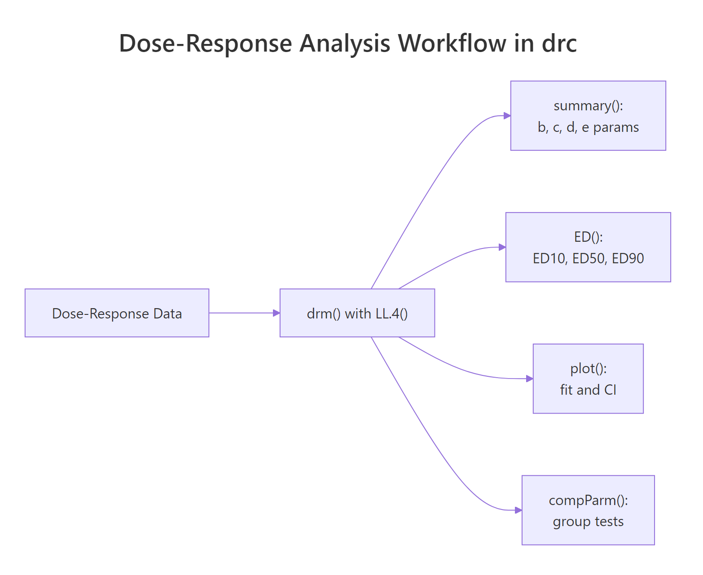
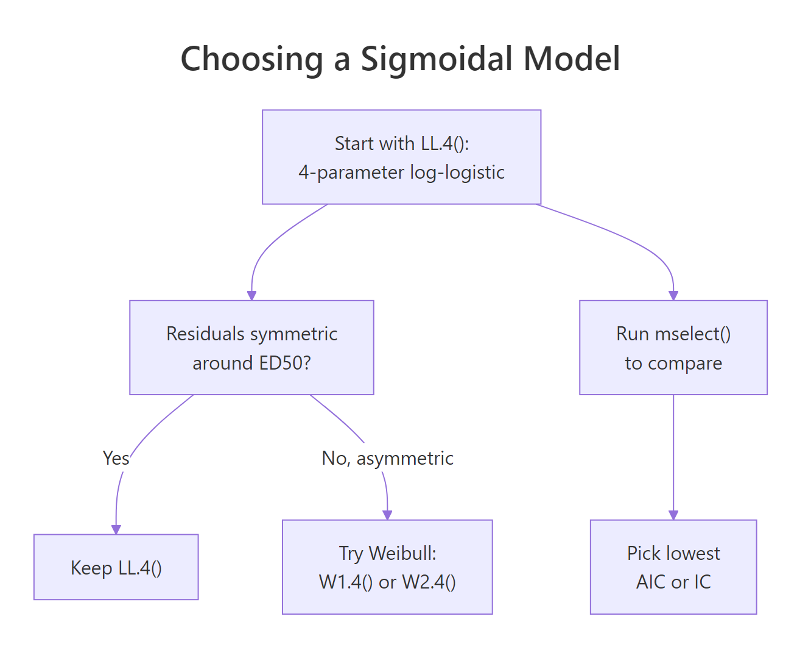

Dose-Response Analysis in R: drc Package for Sigmoidal Curves
Dose-response analysis models how a biological or chemical response, like plant growth, cell mortality, or enzyme activity, changes with increasing dose. The drc package in R fits sigmoidal curves (log-logistic, Weibull, and more), estimates effective doses such as ED50 or EC50, and compares curves between treatment groups, all through one consistent interface built around drm().
How do you fit a dose-response curve with drc?
A single call to drm() fits a sigmoidal curve to your dose-response data. You pass a formula, the data frame, and a model family (the log-logistic family is the default workhorse), and drm() returns a fitted object that feeds every downstream step: parameter estimation, effective-dose computation, plotting, and group comparison. The bundled ryegrass dataset, ferulic-acid concentrations versus ryegrass root lengths, is the canonical worked example from the drc authors.
Four parameters describe the curve. d is the upper asymptote (7.79 cm of root growth at zero dose), c is the lower asymptote (0.48 cm at very high dose), e is the ED50 (3.06 mM of ferulic acid halves root length), and b is the slope at ED50. All four estimates are highly significant, meaning the four-parameter curve fits better than flat or simpler alternatives. The residual standard error of 0.53 cm is small relative to the 7.3 cm response range, so the fit is tight.

Figure 1: A typical drc workflow. One drm() fit feeds summary(), ED(), plot(), and compParm().
Try it: Fit a three-parameter log-logistic model (LL.3()) to the same ryegrass data, then print its summary. LL.3 fixes the lower asymptote at zero, so you'll see only three parameters (b, d, e).
Click to reveal solution
Explanation: LL.3() constrains the lower asymptote to zero, dropping the c parameter. This is useful when the response genuinely bottoms out at zero (root length cannot be negative).
How do you estimate ED50, EC50, and other effective doses?
The effective dose EDp is the dose producing a response p percent of the way between the two asymptotes. ED50 is the halfway dose, ED10 is an early-effect marker, ED90 is near the plateau. In pharmacology the same quantity is called EC50 (effective concentration) or IC50 (inhibitory concentration); in toxicology it is LC50 (lethal concentration). All four names refer to the same value, the e parameter in a log-logistic fit. The ED() function gives you every level you ask for, with delta-method confidence intervals.
ED50 is 3.06 mM, matching the e parameter from the summary. Its 95% confidence interval is narrow (2.66 to 3.46), which makes sense because the data cluster densely around the inflection point. ED90 has a much wider CI (4.73 to 8.06), because fewer data points anchor the high-dose plateau. Always report ED estimates with their CIs, a point estimate without uncertainty is a half-answer.
If you are curious about the math, the four-parameter log-logistic curve has the form:
$$f(x) = c + \frac{d - c}{1 + \exp\{b \cdot [\log(x) - \log(e)]\}}$$
Where:
- $x$ is the dose
- $c$ is the lower asymptote (response at infinite dose)
- $d$ is the upper asymptote (response at zero dose)
- $b$ is the slope coefficient at ED50 (negative for decreasing response, as in root growth)
- $e$ is the ED50 itself, embedded directly in the model
If you're not interested in the math, skip to the next section, the practical code above is all you need.
ED() gives you the confidence interval. Always use ED() when you plan to report or compare ED values across treatments.Try it: Compute ED25 (the dose producing a quarter of the full response) with its 95% delta-method CI.
Click to reveal solution
Explanation: Pass a single value to respLev. Delta-method CIs are built from the parameter covariance matrix, so they are cheap to compute.
Which sigmoidal model should you choose?
LL.4 is the safe default, but drc ships with a family of alternatives for curves that are not symmetric, or that need one extra degree of flexibility. Here are the most useful ones:
| Family | Function | Params | When to use |
|---|---|---|---|
| Log-logistic (3-param) | LL.3() |
b, d, e | Lower asymptote is truly zero |
| Log-logistic (4-param) | LL.4() |
b, c, d, e | Symmetric sigmoid, most common default |
| Log-logistic (5-param) | LL.5() |
b, c, d, e, f | Asymmetric, extra shape parameter |
| Weibull type 1 (4-param) | W1.4() |
b, c, d, e | Right-skewed drop-off |
| Weibull type 2 (4-param) | W2.4() |
b, c, d, e | Left-skewed drop-off |
The fastest way to pick is mselect(), which refits the data under every candidate and prints information criteria side by side.
Read the table two ways. The IC column (smaller is better) ranks W2.4 first and LL.4 second, separated by a 1.6-unit gap, which is a modest preference for W2.4. The Lack of fit column is a p-value from a goodness-of-fit test; all five models are above 0.05, so none are rejected outright. When two models are close in IC and both pass lack-of-fit, either choice is defensible; prefer the simpler model (fewer parameters) unless you have a biological reason to pick an asymmetric shape.

Figure 2: Decision guide for picking among LL.4, LL.3, LL.5, and Weibull families.
modelFit() runs the same lack-of-fit test as a standalone check once you have settled on a model.
A p-value of 0.28 means we have no evidence the Weibull type-2 model systematically misfits the data, good news.
mselect(). Switch families only when residuals are clearly asymmetric or mselect() shows a meaningful IC drop of roughly 2+ units.Try it: Run modelFit() on the original model (the LL.4 fit) and check its lack-of-fit p-value.
Click to reveal solution
Explanation: The p-value of 0.076 is close to 0.05 but not below it, so LL.4 is not rejected. Combined with a slightly higher residual variance than W2.4, this is why mselect() gave W2.4 a small edge.
How do you compare dose-response curves between groups?
Real experiments rarely involve one curve. You compare two herbicides, four cell lines, or three drug formulations, and the question is whether their curves differ. The curveid argument to drm() fits a separate curve per group in one model, and compParm() runs pairwise tests on any single parameter. The bundled S.alba dataset shows biomass of Sinapis alba (white mustard) versus dose, compared across two herbicides, bentazone and glyphosate.
Eight parameters, four per herbicide. Bentazone's ED50 is 33.2 g/ha, glyphosate's is 0.072 g/ha, a 460-fold potency ratio in favour of glyphosate. But is that difference statistically significant, or a sampling artefact? compParm() answers directly.
The "-" operator tests the difference e_Bentazone - e_Glyphosate. The 33.1 g/ha estimated difference is overwhelmingly significant (p < 0.001), so glyphosate is genuinely more potent. Use "/" instead to test the ratio, which is often more interpretable for dose-response data.
compParm() assumes the functional form fits both groups. If one group is sigmoidal and the other is linear or biphasic, the parameter comparison is meaningless. Always plot the fits and eyeball them before trusting any p-value.Try it: Compute the ED50 ratio (Bentazone / Glyphosate) with EDcomp() to get a direct potency ratio estimate with a CI.
Click to reveal solution
Explanation: The ratio of 462 (95% CI: 291 to 633) quantifies glyphosate's potency advantage: you need 462 times more bentazone than glyphosate for the same 50% effect.
How do you visualize dose-response fits?
A dose-response plot lives or dies by its x-axis: doses span orders of magnitude, so the x-axis must be on a log scale, always. drc's built-in plot() method handles that automatically, draws a smoothed curve, and can overlay confidence bands. For publication figures, extract predictions with predict() and build the plot yourself in ggplot2.
The first plot() call draws the fitted curve plus a 95% confidence ribbon (type = "confidence"). The second call, with add = TRUE, overlays the raw data points (type = "all"). Two calls, one figure. You can see the glyphosate curve shifted roughly three orders of magnitude to the left of bentazone, the visual version of the 462-fold ED50 ratio.
For a ggplot2 version, generate prediction data on a fine dose grid, ask predict() for a confidence interval, then layer geom_ribbon() + geom_line() on top of the raw points.
expand.grid() builds every combination of doses and herbicides, predict() returns a matrix with prediction, lower, and upper bounds, and ggplot2 layers the ribbon (confidence band), line (fit), and points (raw data). Swap colours, themes, and scales freely; the shape of the plot stays the same.
scale_x_log10() is non-negotiable.Try it: Add a vertical dashed line at each curve's ED50 to the ggplot2 figure. Use geom_vline() with xintercept = c(0.072, 33.2).
Click to reveal solution
Explanation: geom_vline() draws reference lines at specified x-values. Matching the line colors to the herbicide colors keeps the visual link tight.
Practice Exercises
Exercise 1: Species comparison on selenium toxicity
The selenium dataset (bundled with drc) records mortality of four species of Daphnia at increasing selenium concentrations. Fit a LL.4 model with curveid = type, print the summary, and identify the species with the lowest ED50 (most sensitive to selenium). Save the fit to my_selenium_model.
Click to reveal solution
Explanation: The selenium data are binomial (dead / total), so pass type = "binomial" and weights = total. curveid = type fits four curves in one model. The species with the lowest ED50 is the most sensitive to selenium.
Exercise 2: Model selection and prediction
Using the spinach dataset (spinach biomass vs dose, compared across two curve types), fit a LL.4 model with curveid = CURVE, compare it to W2.4 with mselect(), and use predict() to estimate the response at dose 5 under the lower-IC model. Save the prediction to my_spinach_pred.
Click to reveal solution
Explanation: mselect() reports IC for LL.4 (the baseline) and W2.4 (the challenger). Refit under the winner, then build a tiny newdata grid with DOSE = 5 for every curve level and call predict() with interval = "confidence" to get the point estimate plus CI.
Complete Example
An end-to-end S. alba bioassay workflow, tying every section together.
Step 1 fits, step 2 justifies the model family, steps 3 and 4 answer the research question (how potent, and do they differ), step 5 communicates the result. This five-step template works for most dose-response comparisons: fit, validate, estimate, test, visualize.
Summary
| Function | Purpose |
|---|---|
drm(y ~ x, data, fct = LL.4()) |
Fit a sigmoidal curve |
drm(y ~ x, curveid = group, ...) |
Fit separate curves per group |
summary(model) |
Print b, c, d, e parameter estimates |
ED(model, respLev, interval = "delta") |
Estimate ED10, ED50, ED90 with CIs |
mselect(model, fctList) |
Compare model families via IC |
modelFit(model) |
Lack-of-fit test |
compParm(model, "e", "/") |
Pairwise test on one parameter |
EDcomp(model, percVec) |
Confidence interval on ED ratios |
predict(model, newdata, interval) |
Get fit + CI on a dose grid |
plot(model, type = "confidence") |
Base-R plot with confidence band |
The consistent pattern across the package: every function takes a fitted drm object and operates on it, so once you have a good fit, every downstream analysis is one line of code.
References
- Ritz, C., Baty, F., Streibig, J.C., Gerhard, D. (2015). Dose-Response Analysis Using R. PLOS ONE 10(12): e0146021. Link
- Ritz, C., Streibig, J.C. (2005). Bioassay Analysis using R. Journal of Statistical Software 12(5). Link
- drc package on CRAN, reference manual and vignettes. Link
- Seefeldt, S.S., Jensen, J.E., Fuerst, E.P. (1995). Log-logistic analysis of herbicide dose-response relationships. Weed Technology 9(2): 218-227.
- Motulsky, H., Christopoulos, A. (2004). Fitting Models to Biological Data Using Linear and Nonlinear Regression. Oxford University Press.
- Finney, D.J. (1971). Probit Analysis (3rd ed.). Cambridge University Press.
Continue Learning
- Factorial Experiments in R - the parent tutorial covers full-factorial designs where dose is one of several factors.
- Logistic Regression in R - the log-logistic curve is the continuous-response cousin of logistic regression's binary-response S-curve.
- Linear Regression in R - sigmoidal fits reduce to linear fits at low or high dose; linear regression is always the first tool to reach for.